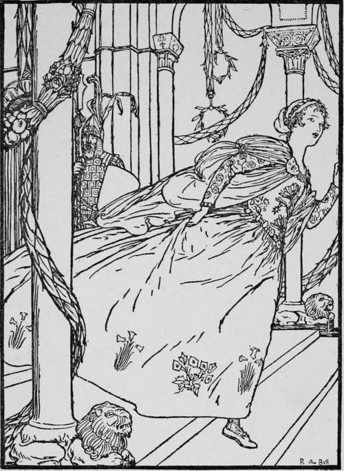

Ashputtel. Continued
Description
This section is from the book "Household Tales by Brothers Grimm", by Brothers Grimm. Also available from Amazon: Household Tales by Brothers Grimm.
Ashputtel. Continued
"Shake, shake, hazel-tree,
Gold and silver over me!"
Then her friend the bird flew out of the tree, and brought a gold and silver dress for her, and slippers of spangled silk; and she put them on, and followed her sisters to the feast. But they did not know her, and thought it must be some strange princess, she looked so fine and beautiful in her rich clothes; and they never once thought of Ashputtel, taking it for granted that she was safe at home in the dirt.
The king's son soon came up to her, and took her by the hand and danced with her, and no one else: and he never left her hand; but when any one else came to ask her to dance, he said, "This lady is dancing with me."
Thus they danced till a late hour of the night; and then she wanted to go home: and the kings's son said, " I shall go and take care of you to your home; " for he wanted to see where the beautiful maiden lived. But she slipped away from him, unawares, and ran off towards home; and as the prince followed her, she jumped up into the pigeon-house and shut the door. Then he waited till her father came home, and told him that the unknown maiden, who had been at the feast, had hid herself in the pigeon-house. But when they had broken open the door they found no one within; and as they came back into the house, Ashputtel was lying, as she always did, in her dirty frock by the ashes, and her dim little lamp was burning in the chimney. For she had run as quickly as she could through the pigeon-house and on to the hazel-tree, and had there taken off her beautiful clothes, and put them beneath the tree, that the bird might carry them away, and had laid down again amid the ashes in her little grey frock.
The next day when the feast was again held, and her father, mother, and sisters were gone, Ashputtel went to the hazel-tree, and said—
"Shake, shake, hazel-tree,
Gold and silver over me!"
And the bird came and brought a still finer dress than the one she had worn the day before. And when she came in it to the ball, every one wondered at her beauty: but the king's son, who was waiting for her, took her by the hand, and danced with her; and when any one asked her to dance, he said as before, "This lady is dancing with me."
When night came she wanted to go home; and the king's son followed her as before, that he might see into what house she went: but she sprang away from him all at once into the garden behind her father's house. In this garden stood a fine large pear-tree full of ripe fruit; and Ashputtel, not knowing where to hide herself, jumped up into it without being seen. Then the king's son lost sight of her, and could not find out where she was gone, but waited till her father came home, and said to him,
" The unknown lady who danced with me has slipt away, and I think she must have sprung into the pear-tree." The father thought to himself, "Can it be Ashputtel?" So he had an axe brought; and they cut down the tree, but found no one upon it. And when they came back into the kitchen, there lay Ashputtel among the ashes; for she had slipped down on the other side of the tree, and carried her beautiful clothes back to the bird at the hazel-tree, and then put on her little grey frock.
The third day, when her father and mother and sisters were gone, she went again into the garden, and said—
"Shake, shake, hazel-tree,
Gold and silver over me!"
Then her kind friend the bird brought a dress still finer than the former one, and slippers which were all of gold: so that when she came to the feast no one knew what to say, for wonder at her beauty: and the king's son danced with nobody but her; and when any one else asked her to dance, he said, "This lady is my partner, Sir."
When night came she wanted to go home ; and the king's son would go with her, and said to himself, "I will not lose her this time; " but however she again slipt away from him, though in such a hurry that she dropped her left golden slipper upon the stairs.
The prince took the shoe, and went the next day to the king his father, and said, "I will take for my wife the lady that this golden slipper fits. Then both the sisters were overjoyed to hear it; for they had beautiful feet, and had no doubt that they could wear the golden slipper. The eldest went first into the room where the slipper was, and wanted to try it on, and the mother stood by. But her great toe could not go into it, and the shoe was altogether much too small for her. Then the mother gave her a knife, and said, " Never mind, cut it off; when you are queen you will not care about toes; you will not want to walk." So the silly girl cut off her great toe, and thus squeezed on the shoe, and went to the king's son. Then he took her for his bride, and set her beside him on his horse, and rode away with her homewards.
But in their way home they had to pass by the hazel-tree that Ashputtel had planted; and on the branch sat a little dove singing—
Back again, back again ! look to the shoe!
The shoe is too small, and not made for you!,
Prince! prince! look again for thy bride,
For she's not the true one that sits by thy side."
Then the prince got down and looked at her foot; and he saw, by the blood that streamed from it, what a trick she had played him. So he turned his horse round, and brought the false bride back to her home, and said, " This is not the right bride; let the other sister try and put on the slipper." Then she went into the room and got her foot into the shoe, all but the heel, which was too large. But her mother squeezed it in till the blood came, and took her to the king's son: and he set her as nis bride by his side on his horse, and rode away with her.
But when they came to the hazel-tree the little dove sat there still, and sang—
Back again, back again ! look to the shoe!
The shoe is too small, and not made for you!,
Prince! prince! look again for thy bride,
For she's not the true one that sits by thy side."
Then he looked down, and saw that the blood streamed so much from the shoe, that her white stockings were quite red. So he turned his horse and brought her also back again. " This is not the true bride," said he to the father; " have you no other daughters ?" " No," said he ; " there is only a little dirty Ashputtel here, the child of my first wife; I am sure she cannot be the bride." The prince told him to send her. But the mother said, " No, no, she is much too dirty; she will not dare to show herself." However, the prince would have her come; and she first washed her face and hands, and then went in and courtesied to him, and he reached her the golden slipper. Then she took her clumsy shoe off her left foot, and put on the golden slipper; and it fitted her as if it had been made for her. And when he drew near and looked at her face he knew her, and said, "This is the right bride." But the mother and both the sisters were frightened, and turned pale with anger as he took Ashputtel on his horse, and rode away with her. And when they came to the hazel-tree, the white dove sang—
"Home! home! look at the shoe!,
Princess! the shoe was made for you!
Prince! prince ! take home thy bride,
For she is the true one that sits by thy side !"
And when the dove had done its song, it came flying, and perched upon her right shoulder, and so went home with her.
Continue to:
Tags
fairy tales, children's stories, brothers grimm, household tales